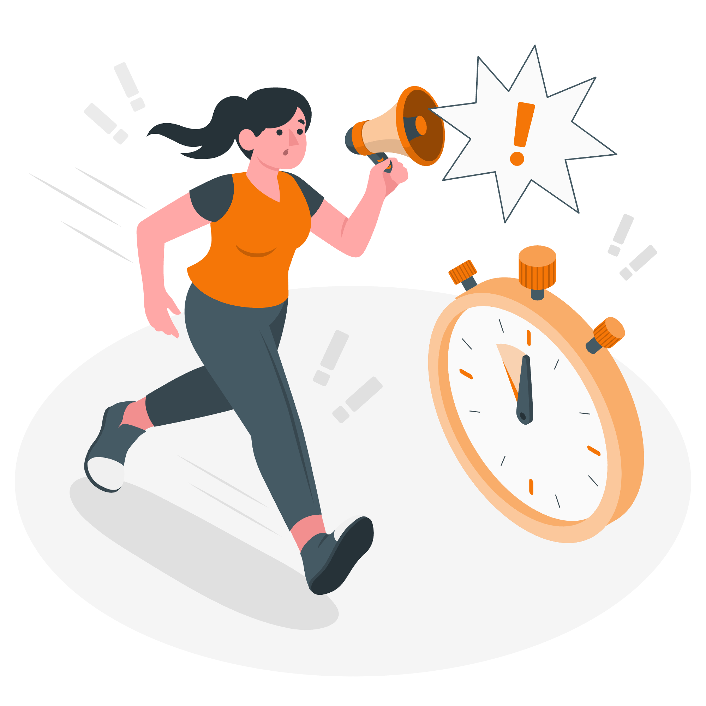
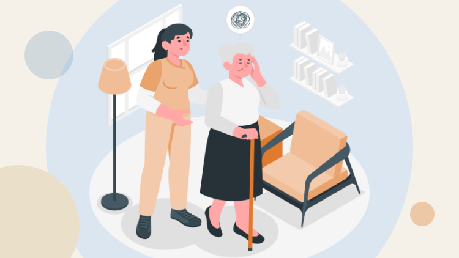
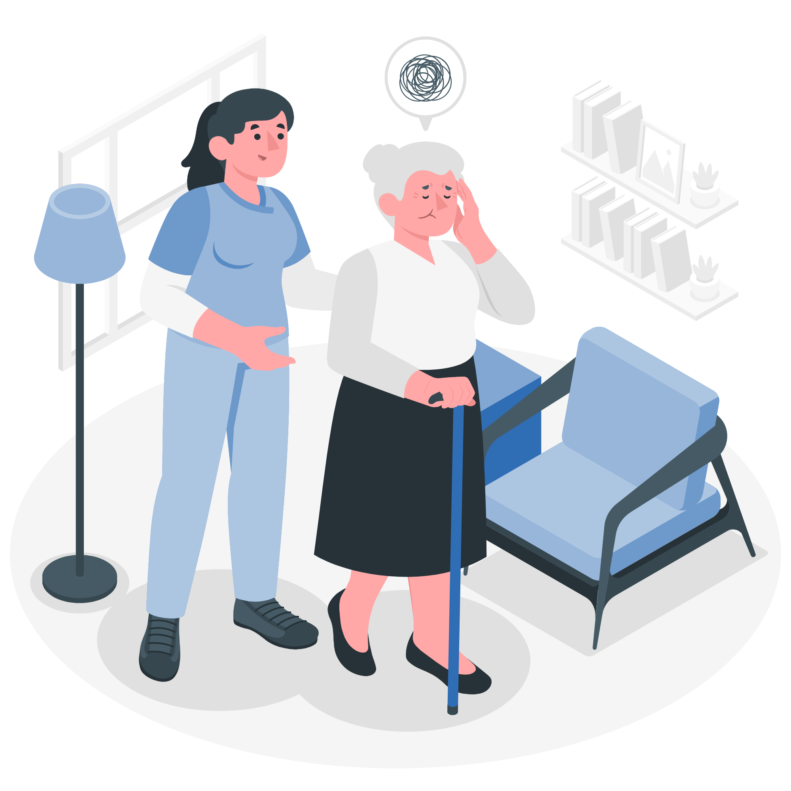
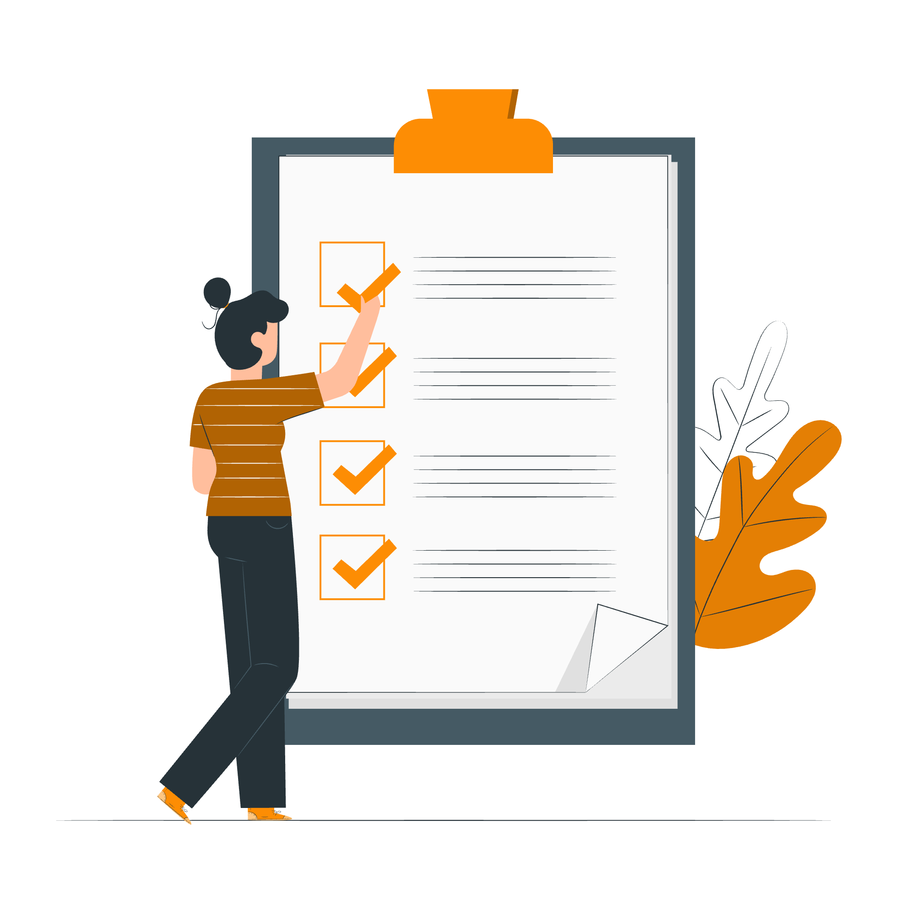
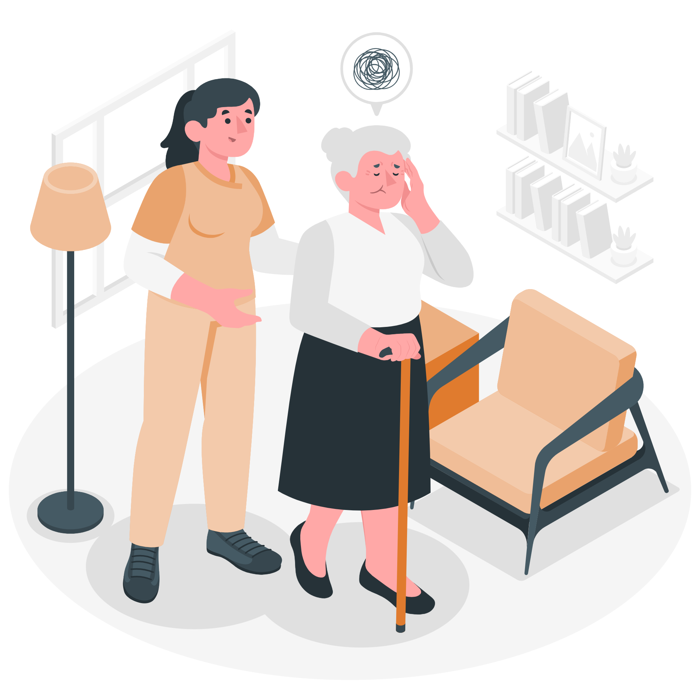
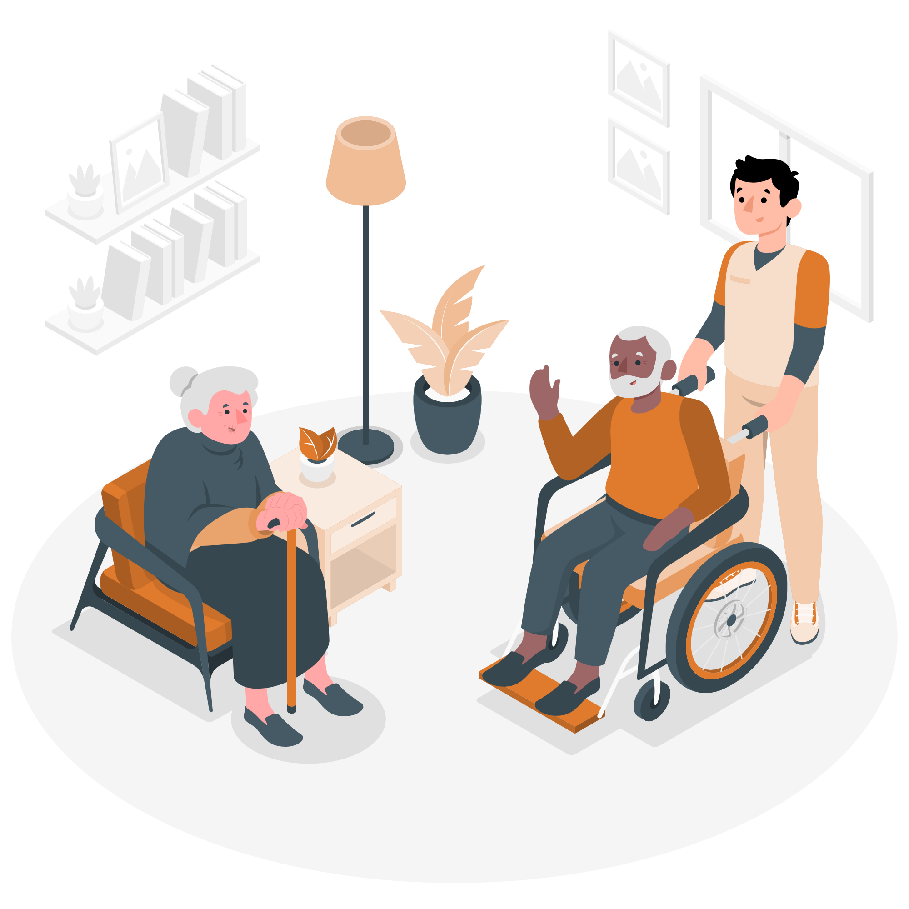
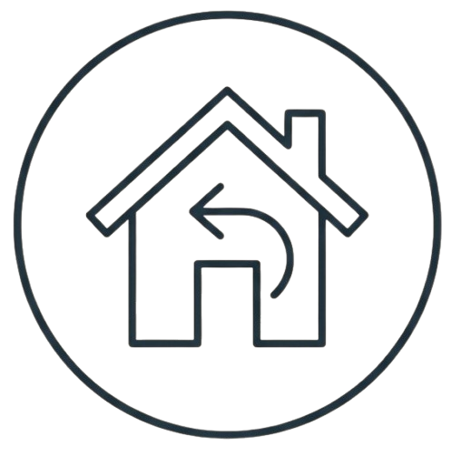
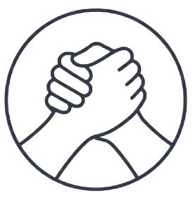

A D. Rosa, que tem demência, senta-se no sofá e recusa-se a sair.
A filha, a Ana, tem poucos minutos para decidir. Ninguém a preparou para isto.
O problema
A D. Rosa e a Ana não são uma exceção
182 500pessoas com demência em Portugal: 4.º país da OCDE em casos por 1000 habitantesAlzheimer Portugal · OCDE 2017
84 %dos cuidadores com Estatuto são mulheres, com 57 anos em médiaISS, out. 2025 · Lei n.º 100/2019
60,5 %dos cuidadores avaliados já estão em sobrecarga, antes de qualquer criseISS, out. 2025
Numa crise, a pessoa perde a rotina e as referências. Quem cuida perde a rede de apoio. (ADI, 2019, Forgotten in a Crisis)
Para quem é

Conheçam a Ana
Quem éFilha e cuidadora informal da mãe, com demência ligeira a moderada
Onde estáEm casa, em Portugal
TempoQuase nenhum: aprende no telemóvel, aos bocados
Precisa deSaber o que fazer quando tudo falha
«Sei cuidar da minha mãe num dia normal. Num incêndio, não sei.»
A concorrência
Há cursos para cuidadores. Nenhum trata a crise.
Cursos para cuidadores (iSupport, NAU, Santa Maria…)
Cursos de primeiros socorros psicológicos
O nosso
Duração
14 h a 51 h
variável
≈ 40 min
Foco
o dia a dia
geral, para todos
a crise: antes, durante, depois
Língua
português
sobretudo inglês
português
Pessoa + cuidador
o cuidador
não
a dupla, sempre
Prática em 3D
não
não
visita à casa (Matterport)
Não substitui estes cursos: completa-os, e a L5 encaminha para eles.
O produto
Socorros psicológicos: cuidador de demência em crise
5 lições de ≈ 8 min, uma por momento da crise
No telemóvel, ao seu ritmo, em português
Visita 3D à casa da D. Rosa em cada lição
Uma atividade e um teste com feedback por lição
Publicado na Udemy, aprovado na revisão de qualidade

0 €grátis
Como está organizado
Uma lição para cada momento da crise
Compreender
L1 · Crise, demência e quem cuida
Bruno Lopes
Antes
L2 · Preparar antes
Tiago Teixeira
Durante
L3 · Primeiro contacto: acalmar
Rodrigo Silva
L4 · Necessidades e encaminhamento
Ricardo Ferreira
Depois
L5 · Depois da crise
Evandro Carvalho
Em todas: gancho → vídeo → atividade → teste → síntese que liga à seguinte. Sempre duas partes: a pessoa e quem cuida.
L1 · Compreender · Bruno Lopes
Crise, demência e quem cuida
Porque é que a D. Rosa se recusa a sair: a casa é a sua segurança
Quatro crises, a mesma pessoa: incêndio, cheia, pandemia, guerra
O stress de quem cuida também é normal
Os 3 passos dos primeiros socorros psicológicos: observar, escutar, encaminhar
Vídeo 8:333D casa do Bruno, 9 tagsAtividade O que dá segurança?Teste 4 perguntas

L2 · Antes · Tiago Teixeira
Preparar antes
O kit de conforto: o que acalma a D. Rosa fora de casa
A ficha da pessoa: quem ela é, para quem não a conhece
O plano de apoio: quem substitui a Ana se ela não puder
«Caça ao kit»: encontrar os objetos na casa em 3D
Vídeo 8:103D casa da D. Rosa, 8 tagsAtividade Complete o kit + 3 PDFsTeste 4 perguntas

L3 · Durante · Rodrigo Silva
Primeiro contacto: acalmar
Uma aproximação calma, para não assustar
Frases curtas e menos estímulos à volta
Reconhecer a angústia e a agitação da pessoa
Acalmar-se a si primeiro, para conseguir acalmar a mãe
Vídeo ≈ 8 min3D visita com tagsAtividade Respiração Guiada Teste 4 perguntas

L4 · Durante, em casa ou fora · Ricardo Ferreira
Necessidades e encaminhamento
Chegar a um sítio que não é casa: o espaço de acolhimento
O que atender primeiro e como não deixar a pessoa perder-se
Sinais de alarme: quando pedir ajuda especializada
Aceitar ajuda: a ficha e o plano da L2 voltam aqui
3D «O melhor lugar»Atividade O que faria nesta situação? + cartão de bolsoTeste 4 perguntas

L5 · Depois · Evandro Carvalho
Depois da crise
O regresso a casa: retomar a rotina aos poucos
Vigiar os sinais das semanas seguintes
A exaustão acumulada de quem cuida
Onde pedir apoio psicológico, para os dois
3D Relembrar a casa da D. RosaTeste 4 perguntas

RetomarVigiar

Apoiar
Agora vocês · Teste 1, pergunta 1
Levantem a mão: A, B ou C?
Chega a ordem para sair de casa por causa de um incêndio. A D. Rosa senta-se no sofá e recusa-se a sair. Qual é a explicação mais provável?
ANão percebe o perigo, e a casa é o que lhe dá segurança.
BQuer contrariar a filha e mostrar que ainda decide sozinha.
CNão ouviu o alerta, porque o rádio e a televisão estavam desligados.
Certo, porque a pessoa com demência pode não perceber o perigo, e sair é perder as suas referências. — No curso, cada opção errada também explica porquê.